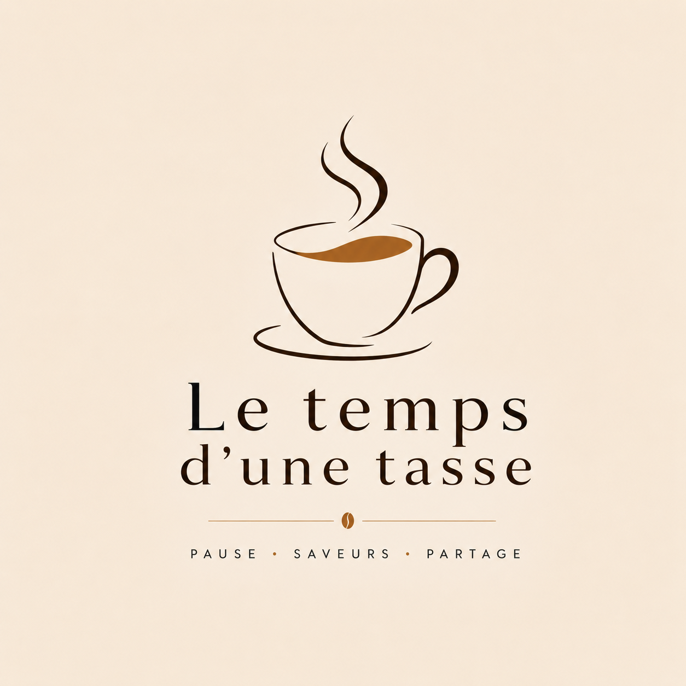
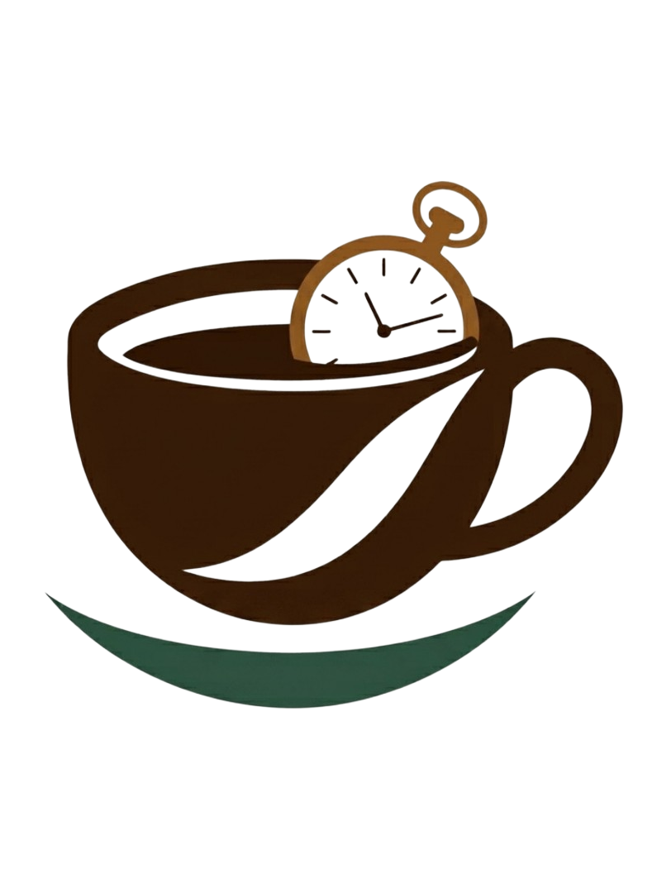

Le temps d'une tasse
Planche de charte
Brûlerie artisanale de café, thé et infusions, en Provence depuis 1998. Palette, logos et typographie du site.
Palette
Le crème porte la page, le brun porte le texte, le caramel porte l'action, le vert sapin sert d'accent.
Couleurs principales
#F3EBD9243, 235, 217#331B0A51, 27, 10#905B27144, 91, 39#30584748, 88, 71#1E0F0530, 15, 5Couleurs secondaires
#FAF5EA · 250, 245, 234#D9A566 · 217, 165, 102#B9A98F · 185, 169, 143#C1121F · 193, 18, 31Proportions
Contrastes
Logos
Une tasse et une montre à gousset: le temps d'une tasse. Trois couleurs seulement: brun café, caramel, vert sapin.

leTempsDuneTasse_logo.png
leTempsDuneTasse_logo_2.pngDéclinaisons sur fond foncé

#1E0F05#331B0A#305847
Règles
Zone de protection: au moins la hauteur de la montre. Taille minimale: 120 px pour le logo complet, 32 px de haut pour la tasse seule. Ne pas déformer, recolorer, ajouter d'ombre, ni poser le logo couleur sur un fond foncé.
Typographie
Deux familles seulement: une serif élégante pour la voix de la marque, une sans-serif lisible pour tout le reste.
abcdefghijklmnopqrstuvwxyz
0123456789 àéèêçùô « » €
abcdefghijklmnopqrstuvwxyz
0123456789 àéèêçùô « » €
Échelle
| Style | Exemple | Desktop / mobile | Graisse |
|---|---|---|---|
| H1 | Trouvez le café qui vous ressemble | 48 / 32 px | Playfair 700 |
| H2 | Découvrir la brûlerie | 32 / 24 px | Playfair 700 |
| H3 | Éthiopie Yirgacheffe | 22 / 18 px | Playfair 600 |
| Texte | Grains sélectionnés à la source, torréfiés avec soin, livrés dans leur fraîcheur. | 16 px | Lato 400 |
| Petit texte | Livraison offerte dès 35 € d'achat. | 14 px | Lato 400 |
Boutons
Coins 6 px, hauteur 48 px, un seul style de bouton principal par page.